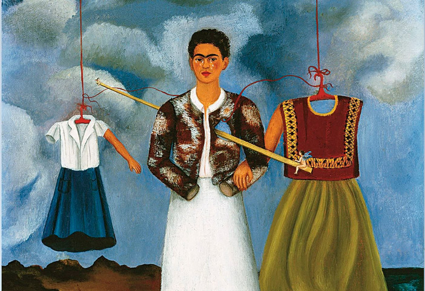

Frida Kahlo nació el 6 de julio de 1907 en Coyoacán, México. Frida nació en una familia adinerada,
su padre era un reconocido fotógrafo alemán y su madre
era de descendencia indígena y española con la cual Kahlo se sintió más identificada, celebró sus
valores culturales y creencias indígenas a lo largo de su vida.
En su adultez desarrollo obras que afirmaban sus creencias izquierdistas, realizando autoretratos acerca
de la situación del país y criticando su sistema.
Kahlo sufrió de varias enfermedades a lo largo de su vida, pues en 1913 contrajo poliomielitis,
lo que conllevó a una serie de operaciones que la dejaban en cama, con la pierna derecha
mucho más delgada que la izquierda dificultandole vivir como una niña normal.
En 1925 tuvo un accidente lo que causó que tuviera un montón de lesiones.
Luego de su accidente se inclinó hacia el arte, aprendió a pintar y mostraba un complejo
mundo psicológico que se refleja en sus pinturas.
Su vida se convirtió en algo tan
icónico como sus obras, pues ella era su tema principal y más de un tercio de sus obras eran
autorretratos. Eran obras personales y políticas que reflejaba su turbulenta vida
personal, su enfermedad y su pésima relación con el muralista Diego Rivera.

"Pensaron que yo era surrealista, pero no lo fuí. Nunca pinté mis sueños, sólo pinté mi propia realidad"
Alejandra Cubides Lozano - 1001